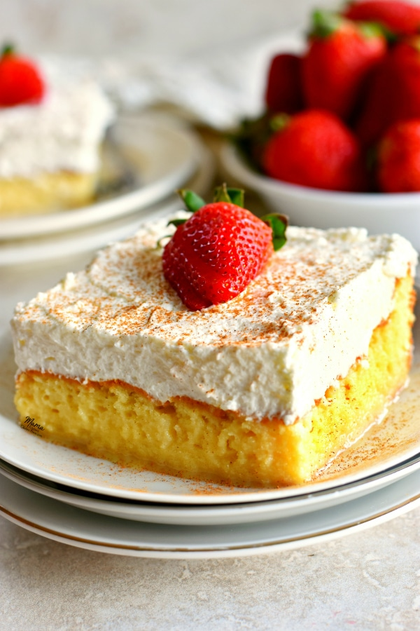

Gluten Free Tres Leches Cake

Gluten Free Tres Leches
FYI: I sourced this from mamaknowsglutenfree.com, photo as well. No pics of
one I've made but I can guarantee this is the best GF cake you can make.
My girlfriend has celiac so I make this often and it's a hit!
Ingredients
- 1 cup gluten free flour, I use Red Mill 1-to-1
- 1.5 teaspoon baking powder
- 1/4 teaspoon salt
- 5 eggs, whites and yolks separated
- 1 cup sugar, separate into 3/4 cup and 1/4 cup
- 1/3 cup milk, I use Lactaid milk because my girlfriend is also lactose intolerant
- 1 teaspoon vanilla extract
- 12oz can of evaporated milk
- 14oz can sweet condensed milk
- 1/4 cup whole milk (again, Lactaid)
- Optional toppings like cinnamon, strawberries, cherries or other fruit
- 2 cups heavy cream
- 1/4 cup powdered sugar
- 1/2 teaspoon vanilla extract
Steps
- Preheat oven to 350
- Combine flour, baking powder, and salt in one bowl
- separate eggs and yolks into different bowls
- In another bowl mix 3/4 cup sugar and egg yolks, using a mixer is easier, they'll be pale yellow
- add 1/3 cup milk and vanilla extract to yolk mixture and mix on low
- Combine the yolk mixture with the flour mixture and mix gently (or on low in a mixer)
- In another bowl, beat egg whites on high, slowly add the 1/4 sugar (do it bit by bit) until you get stiff peaks, should look like whipped cream
- Slowly combine egg white mixture into the batter, do this gently as the whites make the cake fluffy, but make sure everything is incorporated
- Pour batter into a greased 9x13 pan, smooth the top
- Bake cake for about 35 mins, try the toothpick test when done (insert toothpick in the center and if batter sticks to toothpick, give the cake another 2 minutes in the oven)
- Poke a ton of holes in the cake
- In a bowl, combine the evaporated, condensed, and remaining whole milk, then pour over cake slowly, make sure not to spill
- Refrigerate cake for at least an hour, trust me, it's way better cold
- Meanwhile, in another bowl, mix heavy cream, powdered sugar, and remaining vanilla and mix on high to make whipped cream
- When cake is refrigerated, spread whipped cream on top of the cake, add desired toppings. Enjoy!